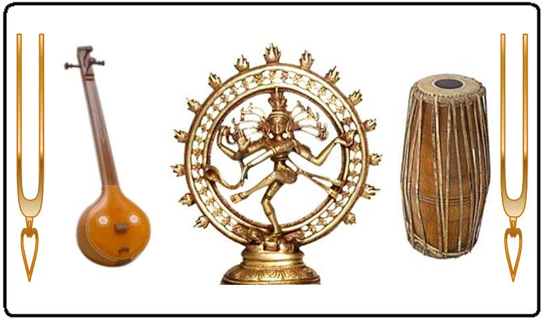

South India comprises a geographical area as large as that of Western Europe where four major languages (Tamil, Telugu, Kannada and Malayalam) are spoken. Although there are two metropolises (Madras, now known as Chennai, and Bangalore), and a few other important cities, most people still live in villages and small towns. This explains the great diversity of traditional South Indian music.
Western categorizations such as “ classical” and “folk” music are not helpful in the context of Indian music because traditional and modern, codified (mârga) and regional (dêshi) styles have often been blended to enhance its emotional appeal.
Religion is an integral part of daily life in India and therefore most Indian music is also regarded as being sacred. For most Indians, music is a means of distraction from daily worries, a form of entertainment among others. Although the mass media (cinema, radio, television) have changed popular tastes and introduced many foreign and modern elements, Carnatic music has remained unmistakably South Indian in character and temperament.
The idea of an individual and permanent artistic “work” is still not very important in India. Perhaps it does not relate to prevailing philosophies about the nature of the universe and man’s role in the scheme of evolution. More important, therefore, than the reproduction of a finished work is the understanding of stylistic principles underlying traditional music.